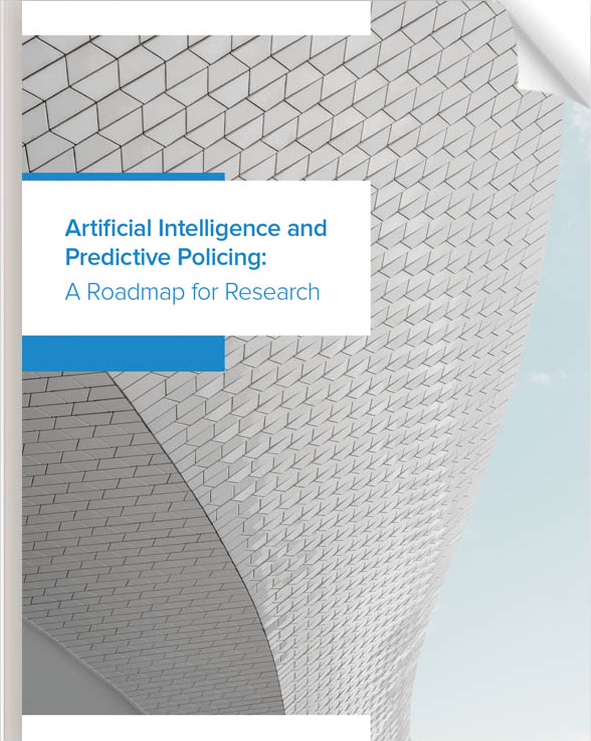

About
Artificial intelligence and machine learning are changing police work: police on patrol are now guided in part by crime forecasts generated by predictive machine learning algorithms. This is so-called predictive policing: the use of predictive algorithms trained on historical crime data and other data to forecast future criminal activity and allocate resources accordingly. A technological outgrowth of earlier policing innovations, especially hot spots policing, predictive policing can detect crime patterns that go unnoticed by human analysts, and it promises to eliminate questionable human “hunches” from the job of crime forecasting. In spite of these advantages, predictive policing has come under withering criticism from civil rights groups, academics, and the communities that have been subjected to the practice. These criticisms include charges that predictive policing reinforces racially biased patterns of policing; that it unfairly burdens marginalized communities; that it is inscrutable by police or the citizens that it affects; or that it infringes the liberty of targeted communities.
This project critically examines these concerns, explores the strategic and ethical rationale in favor of predictive policing, and develops best practices for the development and deployment of algorithmic policing programs.
Ensuring the fairness and justice of innovative policing practices is vital not just for affected communities, but for general societal well-being. This project promises to benefit police departments, communities, and the general public by promoting understanding of the societal and ethical implications of predictive policing. This philosophically-informed yet empirically grounded collaboration will provide the resources for police departments to deploy these technologies responsibly without eroding trust and inviting criticism, before predictive policing becomes further entrenched in policing orthodoxy. When it comes to developing ethically sensitive technologies, an ounce of prevention is worth a pound of cure.